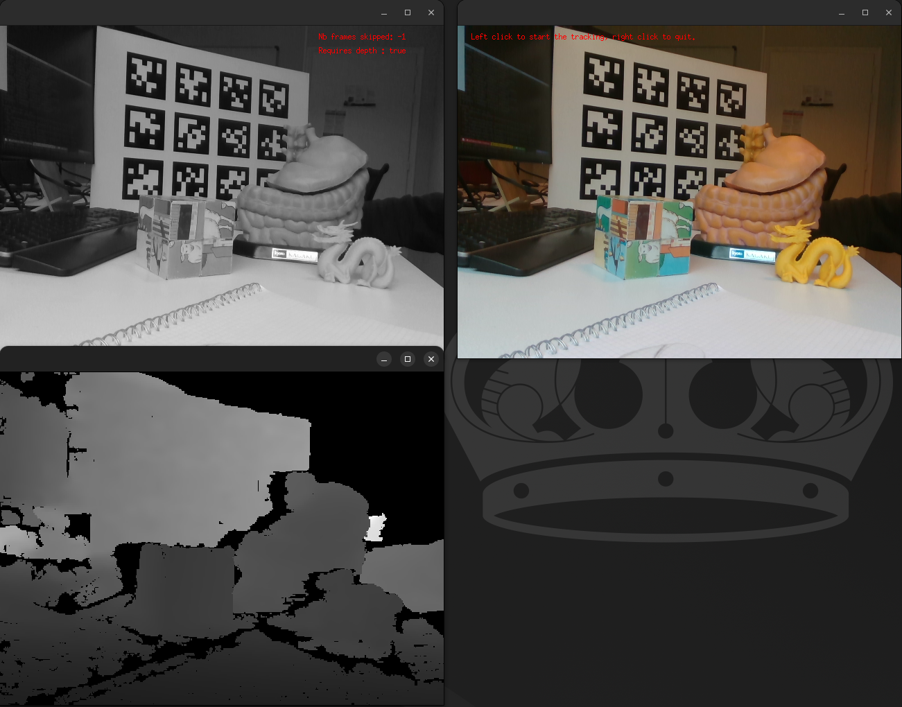
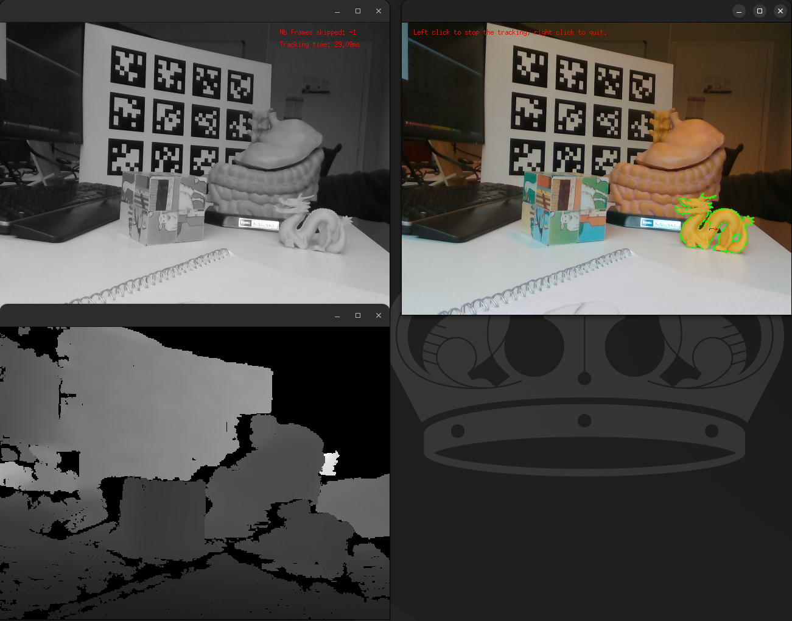

Render-Based Tracker (RBT) tutorial
This is a tutorial for the visp_rbt package. The documentation of the Render-Based Tracker (RBT) provided
by ViSP can be found here
ViSP documentation also provides step-by-step tutorials to progressively learn how to use the RBT
here .
Consequently, this tutorial will not focus on explaining the meaning of the different parameters of the
RBT, but instead focus on the specificities on how to use the visp_rbt package.
Tutorial using a recorded sequence
Purpose of this tutorial
The purpose of this tutorial is to show how to configure a visp_rbt node on a recorded sequence.
We begin with this setup because it is less prone to runtime errors, such as problems with a camera.
How to launch it
If you compiled the packages, you have to source the workspace in which you have compiled the packages.
Otherwise, if you installed the packages using the package manager, you only have to source the /opt/ros/${ROS_DISTRO}/setup.bash
file (or one of the other setup files if you are not using bash).
Then you can run:
ros2 launch visp_tk_tutorials rbt_bag_launch.py
The launch file accepts different arguments. To have the list and the explanations related to the arguments, please run:
ros2 launch visp_tk_tutorials rbt_bag_launch.py --show-args
You can for instance easily switch between the object to track thanks to the object_name launch argument.
When you first start the launch file, you should see something similar to the following image:


After left clicking on the image, the tracker will be turned on. Be careful, you have to do it in less than 5 seconds, because we chose to publish the initial pose of the object to track in order to avoid the initialization from clicks. If you chose for instance to track the dragon, you should see something like the following image:


Afterwards, a left click will momentarily pause the tracker, while a right click will kill the node.
Code explanation
Let’s have a look at rbt_bag_launch.py. Because it is a fairly big file, we will study the parts
separately. Let’s first have a look to the generate_launch_description() method that is called
by the ros2 launch utilitary or by a call to IncludeLaunchDescription in another launch file:
As you can see, the generate_launch_description() method mostly declare the launch arguments and
register an OpaqueFunction object that will be called once the context of the launch file will
be known. However, it is important to notice that it also sets an OpenMP environment variable. It helps accelerate
the processing of depth images when the depth stream is used too and helps accelerate the tracker.
Here is a quick overview of the handle_object_parameter() function:
First, we get the launch arguments values:
Then, we chose the object model that will be used by the RBT node from the object_name launch arguments:
Then, we create a node that will play the sequence, publishing the images, camera info and initial pose:
Then, we instanciate the visp_rbt node, using the dictionnary that we previously filled:
Finally, we ask to shutdown the whole launch file when the visp_rbt node dies:
Tutorial using a Realsense camera
Purpose of this tutorial
The purpose of this tutorial is to show how to configure a visp_rbt node when using an RGBD sensor.
We chose to use a Realsense RGBD sensor because it makes available a topic on which the depth image is
aligned with the color image, which is a requirement for the RBT.
How to launch it
If you compiled the packages, you have to source the workspace in which you have compiled the packages.
Otherwise, if you installed the packages using the package manager, you only have to source the /opt/ros/${ROS_DISTRO}/setup.bash
file (or one of the other setup files if you are not using bash).
Then you can run:
ros2 launch visp_tk_tutorials rbt_live_rs2_launch.py
The launch file accepts different arguments. To have the list and the explanations related to the arguments, please run:
ros2 launch visp_tk_tutorials rbt_live_rs2_launch.py --show-args
If nothing appears on screen, it may mean that the realsense_camera package changed the names of
the topic on which are published the data. Please run ros2 topic list and ros2 topic info -v /<camera_topic>
to check if the realsense_camera publisher and the tracker_rbt subscriber are both listed.
If not, please change the topic names accordingly.
Code explanation
We won’t give a detailed explanation of this launch file, because nothing of importance changed except the
realsense_camera node, which goes beyond the scope of this package.